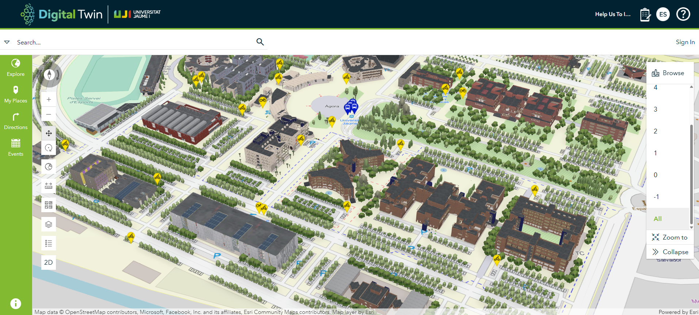
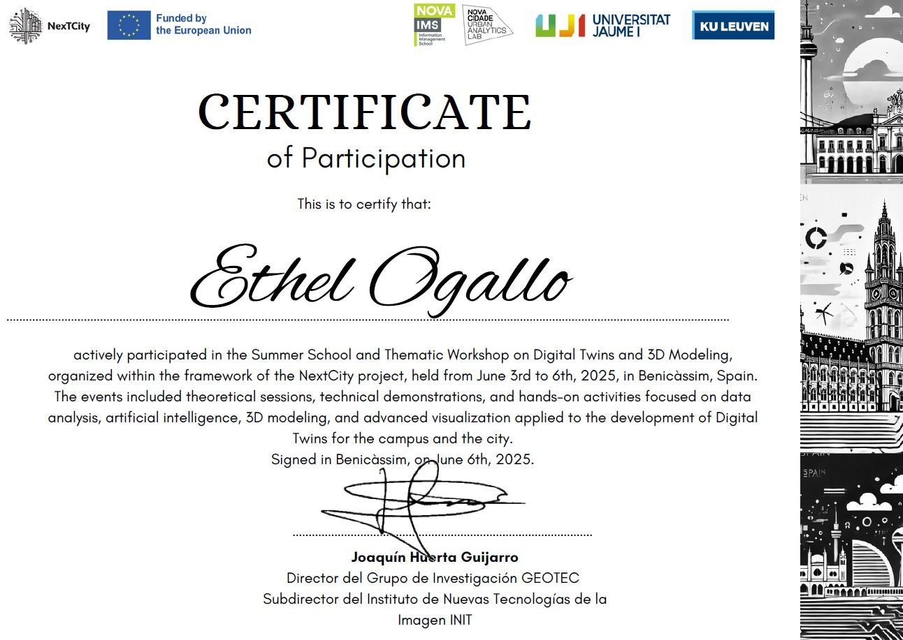

Summer School I

Location: Benicàssim, Spain
Host: University of Jaume I
Project : NextCity
Date : June 3–6, 2025
In June 2025, I participated in the NextCity Summer School and Thematic Workshop, a program combining theory and hands-on experience in digital twins, GeoAI and 3D GIS. Hosted in the beautiful town of Benicàssim, Spain, and organized under the NextCity project, the event brought together students, researchers, and professionals to explore the future of urban innovation.
Jun 3-4 : Summer school : Concepts & Theory
The first two days of the summer school were on the theoretical aspect of Digital Twins and smart city technologies.
Day 1 – Technologies and tools for developing digital twins
The first day of the summer school, led by Florian Fischer (Esri Germany), was on understanding the technologies that develop digital twin systems, with a focus on reality mapping, real-time data integration, and 3D model generation using ESRI tools ArcGIS Reality for ArcGIS Pro and ArcGIS Reality Studio.
We began by exploring aerial triangulation and dense image matching techniques, which form the basis of accurate 3D reconstruction. These methods enable the generation of high-resolution spatial models from overlapping images, ensuring both precision and realism. A particularly fascinating component was the process of 3D-mesh generation, where algorithms automatically filter out moving objects, resulting in clean urban representations, essential for maintaining consistency in urban simulations.
Another advanced rendering technique presented was the use of Gaussian splats, an innovative approach for visualizing complex 3D environments with photorealistic quality, particularly effective when modeling natural textures or urban facades. In parallel, we also examined the availability and value of open lidar datasets, such as those made publicly accessible in the Netherlands, which highlight how national-level open data policies can support digital twin innovation.
Collectively, these technologies demonstrated how spatial data, when combined with the right analytical tools, can be transformed into dynamic, high-resolution urban models. These models serve not only as visual representations but also as data-rich platforms for analysis, simulation, and real-time decision-making.
Day 2 – AI and prediction in Digital Twins
The second day of the summer school was on the integration of AI in the digital twin ecosystem. Led by Minerva Centeno from Esri Spain, the morning session introduced GeoAI, highlighting how machine learning and spatial analysis are converging to enhance decision-making and automate workflows in geospatial applications.
A central focus was the use of deep learning within ArcGIS, particularly in generating unbiased True Ortho imagery. Instead of relying solely on traditional datasets like OpenStreetMap (OSM), models were trained using Digital Surface Models (DSM) and slope data, reducing potential bias and improving accuracy in height-sensitive environments. Several key geoprocessing tools were explored, including Slope, Extract by Attribute, and Raster Solar Radiation, demonstrating their utility in preparing data for AI pipelines.
We also looked into multi-resolution Level of Detail (LOD) modeling, covering a range from LOD 0 to 3.5. This was contextualized with real-world case studies, such as Hungary’s LOD2 initiative which showcased national-scale 3D data production for planning and governance.
A portion of the session was dedicated to the integration of open-source AI libraries into ArcGIS, GEOAI, a framework that blends spatial thinking with cutting-edge machine learning tools. We examined the use of pre-trained models, including practical considerations like batch size, cell resolution, and change detection. Among the tools discussed were Text SAM (Segment Anything Model), Grounding DINO + SAM for text-guided segmentation, and techniques for crop classification from time series data, all pointing toward more intelligent and adaptable geospatial systems.
In the afternoon, Joep Crompvoets from KU Leuven led an intriguing session on the impacts of 3D and AI-driven systems. His discussion went beyond the technical to address digital governance in geospatial systems, emphasizing the need for frameworks that evolve with intelligent technologies. A compelling debate emerged around the question: “AI — hype or hit?” This led to an exploration of the philosophical divide between Symbolic AI and Connectionist (Machine Learning) AI, and the growing efforts to integrate both schools for more powerful systems. Key governance takeaways included the importance of interdisciplinary collaboration and balancing innovation with responsibility in designing future-ready digital infrastructures.
Jun 5-6: Thematic Workshop: From Theory to Practice
The second half of the program was dedicated to applying what we had learned in a hands-on environment.
Day 3 – Fundamentals in 3D modelling
Led by Adrián Bautista (University of Jaume I), we focused on the process of Blenderization, the preparation and simplification of 3D models for use in GIS environments. We began by working with CAD models, which we imported into Blender to clean and optimize for GIS workflows. These models were then georeferenced and visualized in ArcGIS Pro, transforming raw architectural data into functional, spatially aware 3D objects. This workflow showcased how design and geospatial technologies converge in the digital twin pipeline.
We also explored ArcGIS Indoors, introduced by Nicolás Luna (Univ. Jaume I), to understand how interior spatial planning plays a role in smart environments. This tool enables the visualization and management of indoor spaces, setting the foundation for digital twin solutions.
Day 4 – Indoor Mapping & Smart Apps Development
A continuation of the previous day session led by Nicolás Luna (Univ. Jaume I), we extended our skills into indoor network analysis. We built indoor networks within a 3D building model using ArcGIS Network Analyst, simulating realistic routing scenarios , particularly relevant for large-scale indoor environments like airports, hospitals, or shopping malls. We then published our results to ArcGIS Online and developed an interactive web application combining 2D and 3D maps, effectively communicating complex spatial relationships within buildings.
Our Hands-On Output:
A detailed 3D model of a building we developed during the workshop – showcasing the full workflow from data to 3D visualization in ArcGIS Pro.


Reflection
Participating in the summer school was a very enriching experience that offered both technical depth and real-world perspective. We explored the latest advancements in GIS, AI, and digital twin technologies, gaining hands-on experience with tools like ArcGIS Reality, Blender, and ArcGIS Indoors.
These exercises were not only technically rich, but also provided a glimpse into real-world implementations. A good example was the digital twin of the University of Jaume I campus , currently under development as part of their smart campus initiative. This living model illustrates how digital twins can support campus management, operations, and strategic planning. Additionally, we learned about the NextCity project’s vision to develop a regional-scale digital twin for Lisbon’s ZER region, underscoring the increasing scale and importance of these technologies in urban and regional planning.
For me, this was a foundational introduction to 3D mapping and digital twin workflows. The combination of expert-led lectures and immersive practical sessions helped bridge the gap between theory and application. Most importantly, it initiated new ideas for applying digital twin concepts to simulate Earth Observation scenarios such as flooding, wildfire and landcover for monitoring.
Many thanks to the NextCity project and all its partners for organizing this summer school. I would highly recommend this program to anyone interested in geospatial technology, AI, or smart city development as another edition is planned for next year, potentially in Belgium or Portugal where the partner universities are located (look out for their announcement for the location).
The University of Jaume I digital twin

Certificate of participation:

Moments captured throughout the enriching “Next City” summer school.

Image 1: Nicole Salazar and me (CDE students present)Image 2: With other EMJM+ students (the Geotech program)